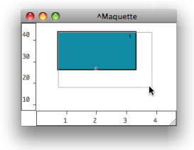

OpenMusic DocumentationHiérarchie de section : OM 6.6 User Manual > Maquettes > TemporalBoxes > Elementary Manipulations
OpenMusic DocumentationHiérarchie de section : OM 6.6 User Manual > Maquettes > TemporalBoxes > Elementary Manipulations
Navigation : page précédente | page suivante
Attention, votre navigateur ne supporte pas le javascript ou celui-ci à été désactivé. Certaines fonctionnalités de ce guide sont restreintes.
Elementary Manipulations
Basic Commands
Selection
Boxes are selected using standard mouse selection. A selected box generally shows a bold border.
To enable multiple selection, keep
SHIFTpressed while clicking on boxes.To select all the boxes of a window :
- choose
Edit / Select All - press
Cmd+a.
- choose
Resize

|
|
| Note that the content displayed in the miniview rarely fits the size of the box. |
Move
To move and item :
- drag and drop it with the mouse
- use the
→keys – addSHIFTto move items faster.
Align
To align all selected boxes automatically, press SHIFT+ a .
Copy
To copy an item from a maquette editor to another one, or to another location in the maquette :
- press
Alt+ and drag the item - use the
Editmenu commands and shortcuts – Copy, Paste, Duplicate....
Deleting Selected Boxes
To delete one or several selected boxes :
- press
Backspace. - use the
Edit / ClearorCutmenu. - use the
Cmd+xshortcut.
Undo
To cancel an action :
- select
Edit / Undo - press
Cmd+z.
Editing and Displaying Information
Size, Position, Name, Comments : the Get Info Window
The Info window displays information about the name, position in the maquette, size of the TemporalBox, as well as possible comments.
To open the window,
Ctrl/ right click on the box and chooseGet Info.To edit the name, position and size of a TemporalBox, or add a comment :
click and type information in the relevant frame
validate

Displaying Names
To display the name of a box, select it and press |
Reminder
To display the TemporalBox reference icon, select the Show Box Icons option of the Maquette Preferences tab.
Références :
Plan :
Navigation : page précédente | page suivante
A propos...(c) Ircam - Centre Pompidou